Iwami, Tottori: things to do, food and stays
Iwami · Tottori
Iwami
Highlighted on the Tottori map.

Stay
浪漫伝承の宿 明石家
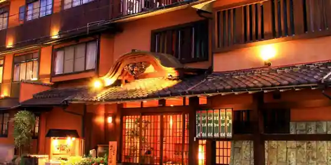
Roman Densho No Yado Akashiya
Inn at Gensenkakenagashi Onsen in Iwai, Iwami.
岩井温泉 岩井屋
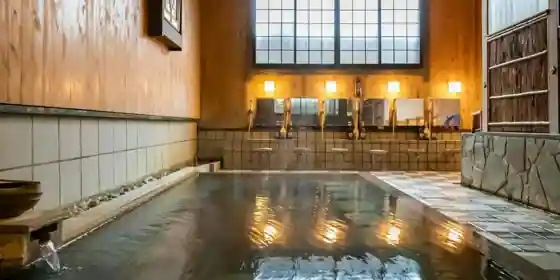
Iwai Onsen Iwai Ya
Inn at Iwai Onsen in Iwai, Iwami.
INDIGO HOUSE DS1
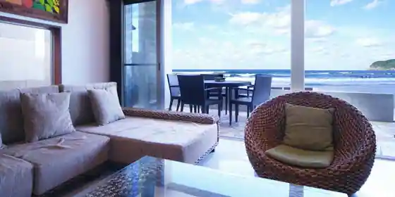
INDIGO HOUSE DS1
INDIGO GEO HOUSE 2・INDIGO GEO HOUSE 3
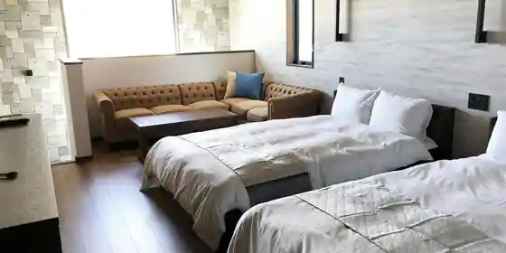
INDIGO GEO HOUSE 2 INDIGO GEO HOUSE 3
COCCARAの宿 FURAHA
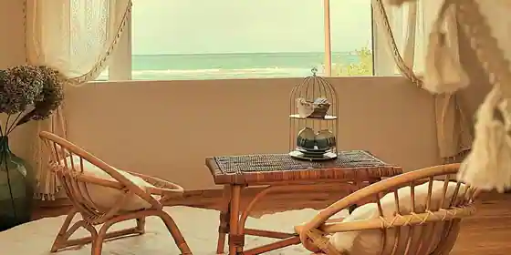
COCCARA No Yado FURAHA
Inn in Otani, Iwami with a retreat concept.
かまや旅館
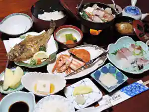
Kamaya Ryokan
Ryokan inn in Uratomi, Iwami with local seafood dinners.
ステージ浦富
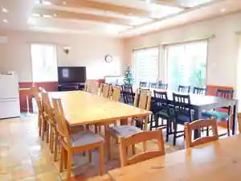
Suteji Ura Tomi
Inn in Makiya, Iwami with room-only plans.
シーサイドうらどめ
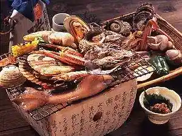
Shisaido Uradome
Inn in Uratomi, Iwami with local seafood dinners.
ビーチインたけそう
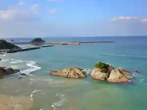
Bichin Takeso
岩井屋
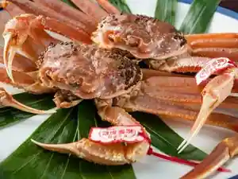
Iwai Ya
民宿 ニュー大谷
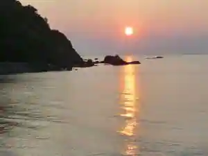
Minshuku Nyu Otani
ゆうなみ小屋
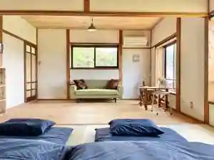
Yunami Koya
Dining
旬魚たつみ 岩美本店
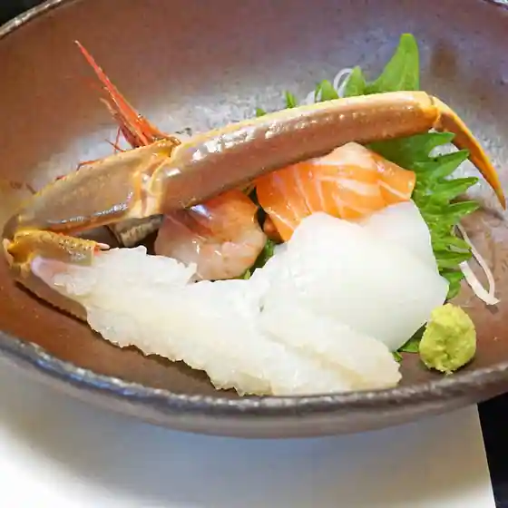
Shungyo Tatsumi Iwami Hon
トゥジュール
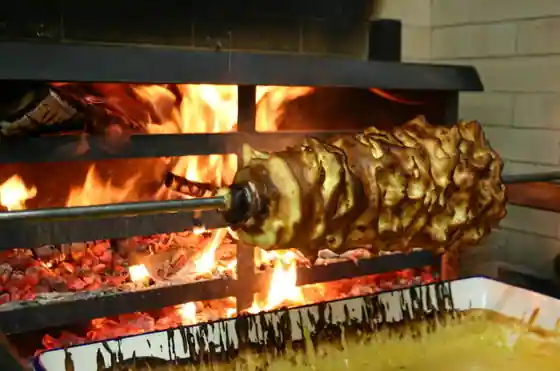
Toujuru
かに甲羅庵 きなんせ岩美店
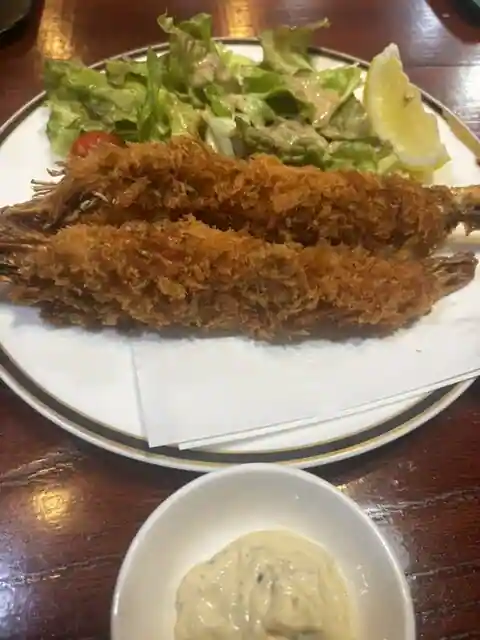
Kani Kora Iori Kinanse Iwami
アル マーレ
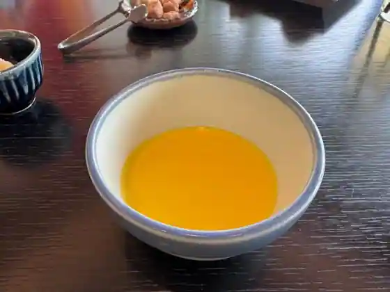
Aru Mare
あじろや
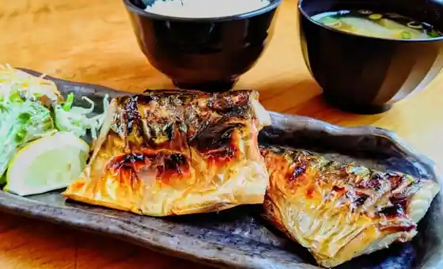
Ajiroya
港カフェ
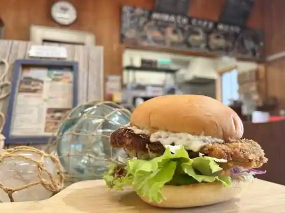
Minato Cafe
道の駅 きなんせ岩美
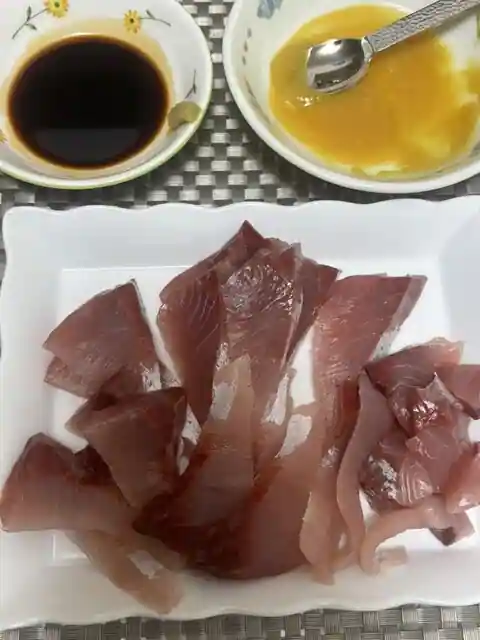
Michi No Eki Kinanse Iwami
めん処 日の出丸
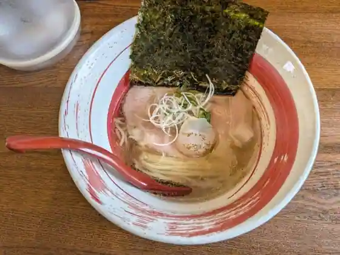
Men Tokoro Hinode Maru
Cafe ニジノキ
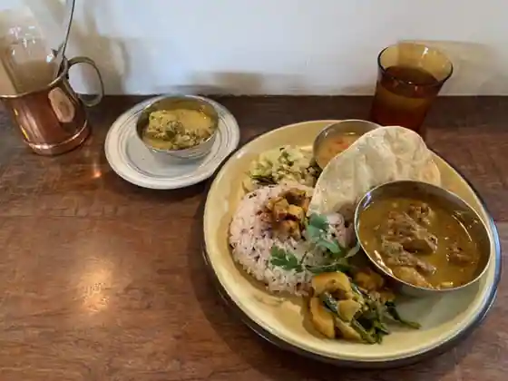
Cafe Nijinoki
くいもんや 海慶
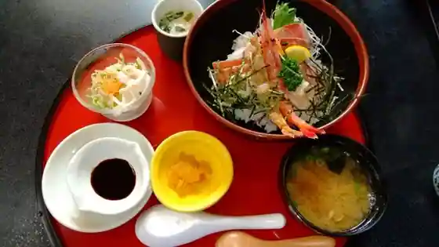
Kuimonya Umi Yoshi
カフェ ブルーム 浦富店
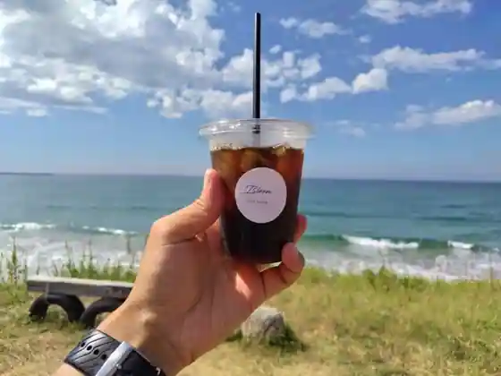
Cafe Burumu Ura Tomi
いわみのおばちゃん家
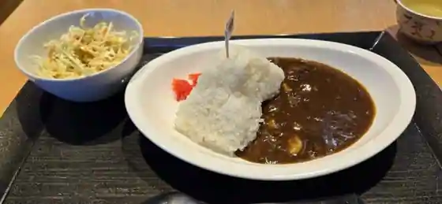
Iwaminobachan Ie
A lot
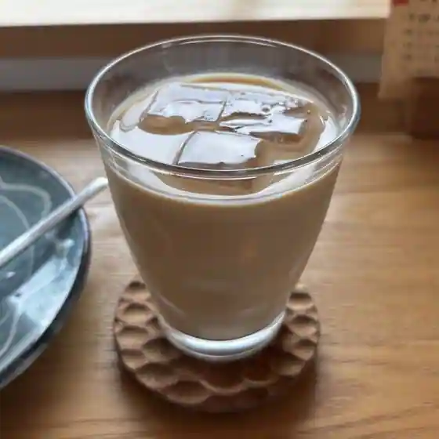
A lot
べるふる 岩美店
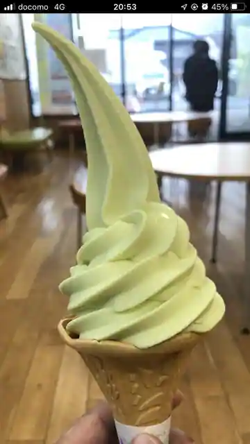
Berufuru Iwami
Beach Cafe ＆ Outdoor ”ALOHA”
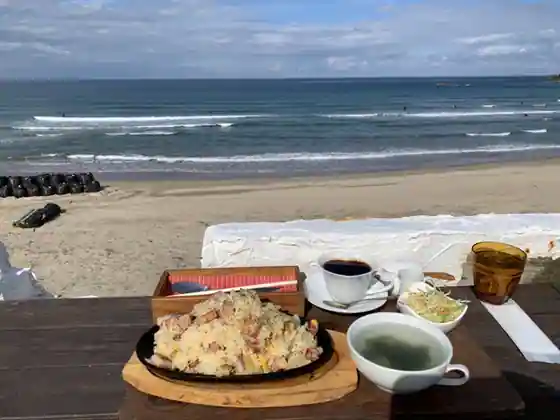
Beach Cafe & Outdoor ALOHA
Continuar
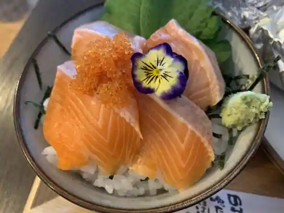
Continuar
あじろカフェ なだばた
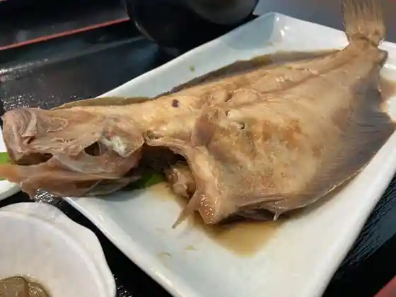
Ajiro Cafe Nadabata
めだかの学校
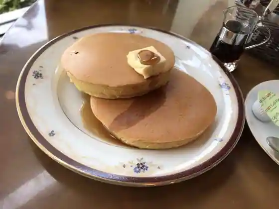
Medakano Gakko
海の家 陸上パーキング
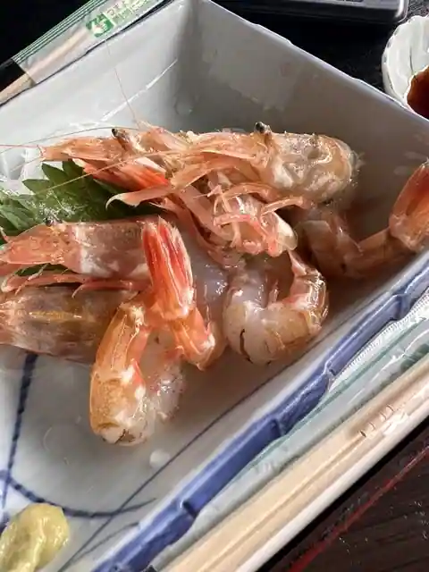
Uminoie Rikujo Pakingu
ロマン
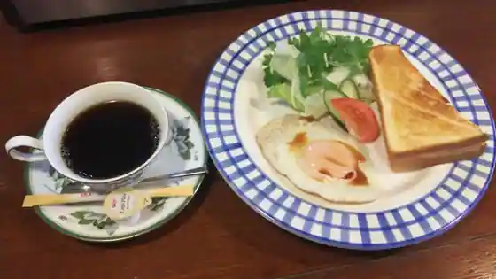
Roman
さんげんや
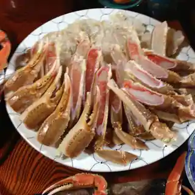
Sangenya
Sights
Ura Tomi Coast Ura Tomi Beach
Ura Tonomi Kishi Shima Meguri Yuransen

Iwai Onsen

Shiikayakkutsuringu

Shu no Ga Ringu

San'in Kaigan Jio Park Shizen Sansaku
Takisan Onsen
Karakawa no Kakitsubata Gunraku
Higashihama Beach
Kai to Umi no Akusesarii Experience
Makiya Beach
Mana Yaki Togei Experience
Yukamuri Onsen
Surume Zukuri Experience
Terakotta Togei Experience
San'in Kaigan Jio Park Umi to Daichi no Nature Kan
Jibiki Ki Ami Experience
Nashi no Ki no Mokko Experience
Ozaki Sui Museum
Zuisen
Bijutsu Kansho Mana Experience
Jio De Kaku Shodo, Jio De Egaku Kaiga
Roadside Station Kinanse Iwami
Supurasshuadobencha AQUA (Akua)
Iwami Town Hall